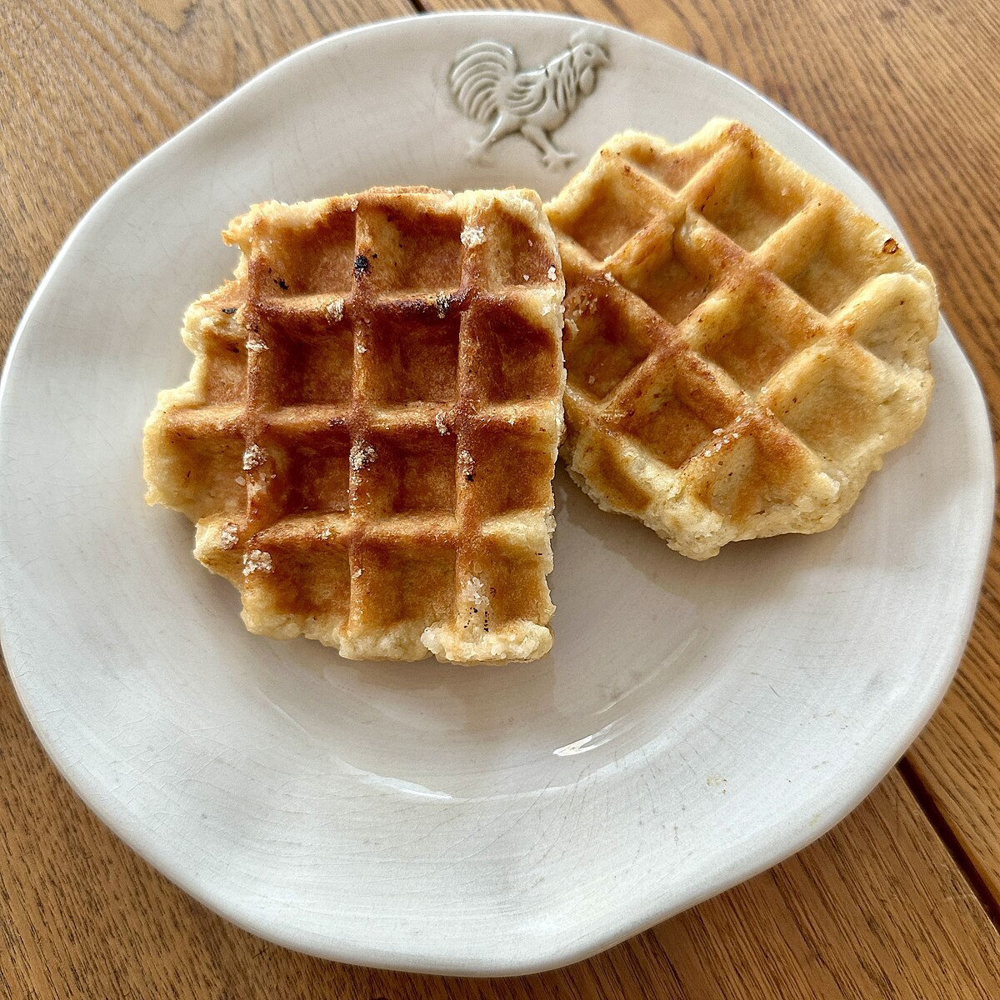

Recipe by: John Kanell (Preppy Kitchen), https://preppykitchen.com/waffle-recipe/

Photo by: Valereee , Wikimedia Commons, "Liège waffles on a plate", Public Doman (CC0)
Ingredients
All-purpose flour
2 teaspoons to 1/4 cup of sugar depending on desired sweetness.
Baking powder
Whole or 2% milk
Eggs - room temperature eggs are best
Vanilla extract
Equipment
Waffle iron
Mixing bowl
Whisk or electric mixer
Measuring cups and spoons
Directions
Preheat the waffle iron. A higher heat is better for crispy waffles. Add all-purpose flour, sugar, baking powder, and salt to mixing bowl while the waffle iron is heating up.
Whisk the dry ingredients together.
To another bowl, add the milk, eggs, and vanilla extract.
Pour in the melted butter to the wet ingredients and whisk the wet ingredients together.
Add the wet ingredients to the dry ingredients and stir until combined.
Grease the preheated waffle iron with butter, vegetable oil, or cooking spray.
Add about 1/3 cup of batter for each waffle to the waffle maker. This is also dependent on the size of your waffle maker. The waffle iron should be not quite completely full as the batter expands as it cooks. Place the waffles on a wire rack until ready to serve.
Serve with your favorite toppings like maple syrup, fruit, or whipped cream.